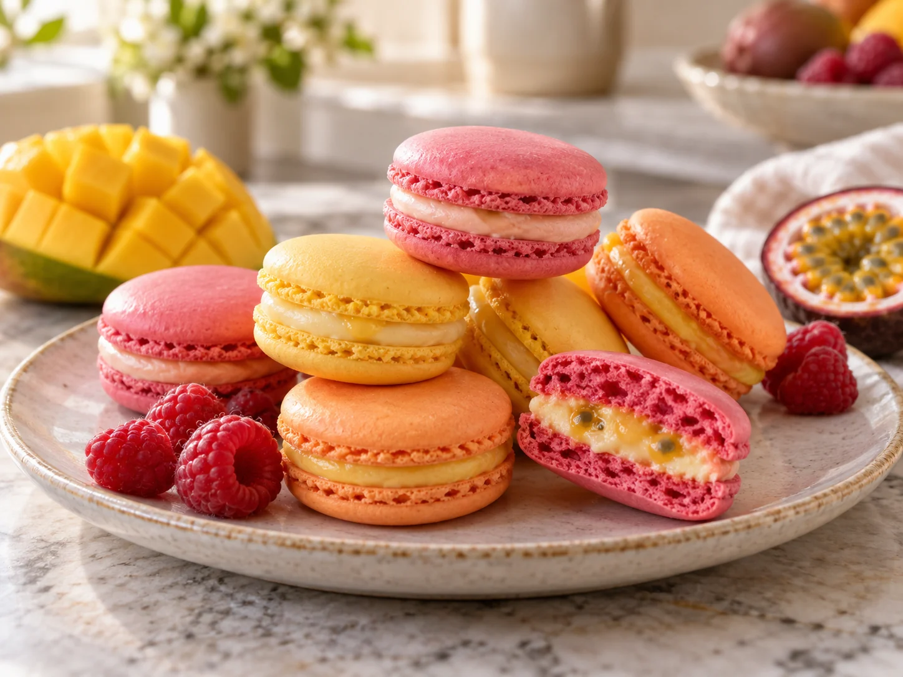

Was Süßes geht immer · Gebäck & süße Teilchen
Macarons

Zarte Mandelschalen treffen auf eine cremige Ganache aus weißer Schokolade und Frucht. Himbeere, Mango oder Passionsfrucht geben den Macarons ihre frische Note.
Zutaten
Für die Macaron-Schalen
50 gEiweiß, etwa 2 Eier
52 gZucker
70 gGemahlene Mandeln, fein gesiebt
62 gPuderzucker
Für die Füllung
100 gWeiße Schokolade
50 gFruchtpüree, zum Beispiel Himbeere, Mango oder Passionsfrucht
25 gSchlagsahne
OptionalEtwas Frischkäse
Zubereitung
- Gemahlene Mandeln und Puderzucker miteinander vermischen und noch einmal sehr fein durchsieben. Zwei Backbleche mit Backpapier oder Macaronmatten vorbereiten.
- Das Eiweiß zunächst schaumig schlagen. Den Zucker langsam einrieseln lassen und weiterschlagen, bis eine feste, glänzende Baisermasse entsteht.
- Die Mandelmischung in zwei Portionen vorsichtig unterheben. Die Masse dabei am Schüsselrand verstreichen und wieder zusammennehmen, bis sie dickflüssig und gleichmäßig wie ein breites Band vom Teigschaber läuft.
- Die Masse in einen Spritzbeutel mit runder Tülle füllen und etwa 3 cm große Kreise aufspritzen. Die Bleche mehrmals vorsichtig auf die Arbeitsfläche klopfen, damit Luftbläschen entweichen.
- Die Schalen etwa 30–45 Minuten bei Raumtemperatur trocknen lassen. Sie sind bereit, wenn die Oberfläche bei vorsichtiger Berührung nicht mehr klebt.
- Den Backofen auf 140 °C Umluft vorheizen. Die Macaron-Schalen jeweils ein Blech nach dem anderen etwa 14–16 Minuten backen und anschließend vollständig auskühlen lassen.
- Für die Ganache die weiße Schokolade fein hacken. Fruchtpüree und Sahne kurz erhitzen, aber nicht kochen lassen. Über die Schokolade gießen, eine Minute stehen lassen und anschließend glatt verrühren.
- Die Ganache vollständig abkühlen und fest werden lassen. Nach Wunsch etwas Frischkäse unterrühren. Je zwei passende Schalen mit der Ganache zusammensetzen.
Tipp
Am besten schmecken die Macarons, wenn sie nach dem Füllen etwa 24 Stunden luftdicht im Kühlschrank durchziehen. Vor dem Servieren kurz Zimmertemperatur annehmen lassen.